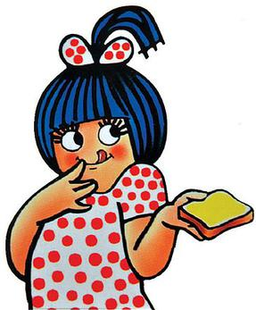
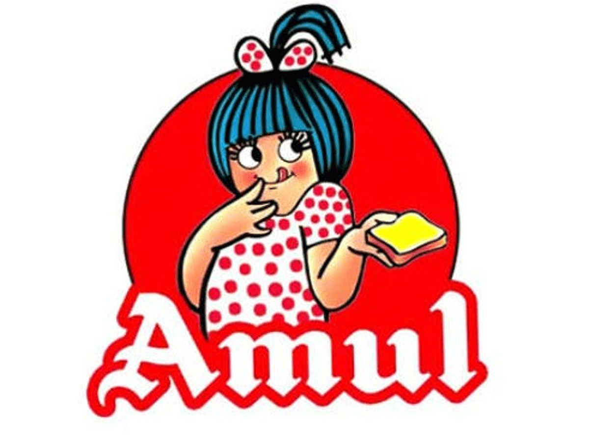

Anand Milk Union Limited (abbreviated as Amul) is an acronym of the Indian cooperative society named Gujarat Milk Marketing Federation based in Anand, Gujarat.
It is under the ownership of Gujarat Cooperative Milk Marketing Federation Limited, Department of Cooperation, Government of Gujarat. It is controlled by 3.6 million milk producers.
Tribhuvandas Kishibhai Patel founded the organisation in 1946 and served as its chairman until his retirement in the 1970s.

Amul was found on 19 December 1946 as a response to the exploitation of small dairy farmers by traders and agents.
At the time, milk prices were arbitrarily determined, giving Polson an effective monopoly in milk collection from Kaira and its subsequent supply to Mumbai.

He hired Verghese Kurien in 1949, initially as the general manager, where Kurien guided the technical and marketing efforts of the cooperative.
Kurien briefly became the chairman of Amul following Patel's death in 1994, and is credited with the success of Amul's marketing.
Amul spurred India's White Revolution, which made the country the world's largest producer of milk and milk products, and has since ventured into overseas markets.